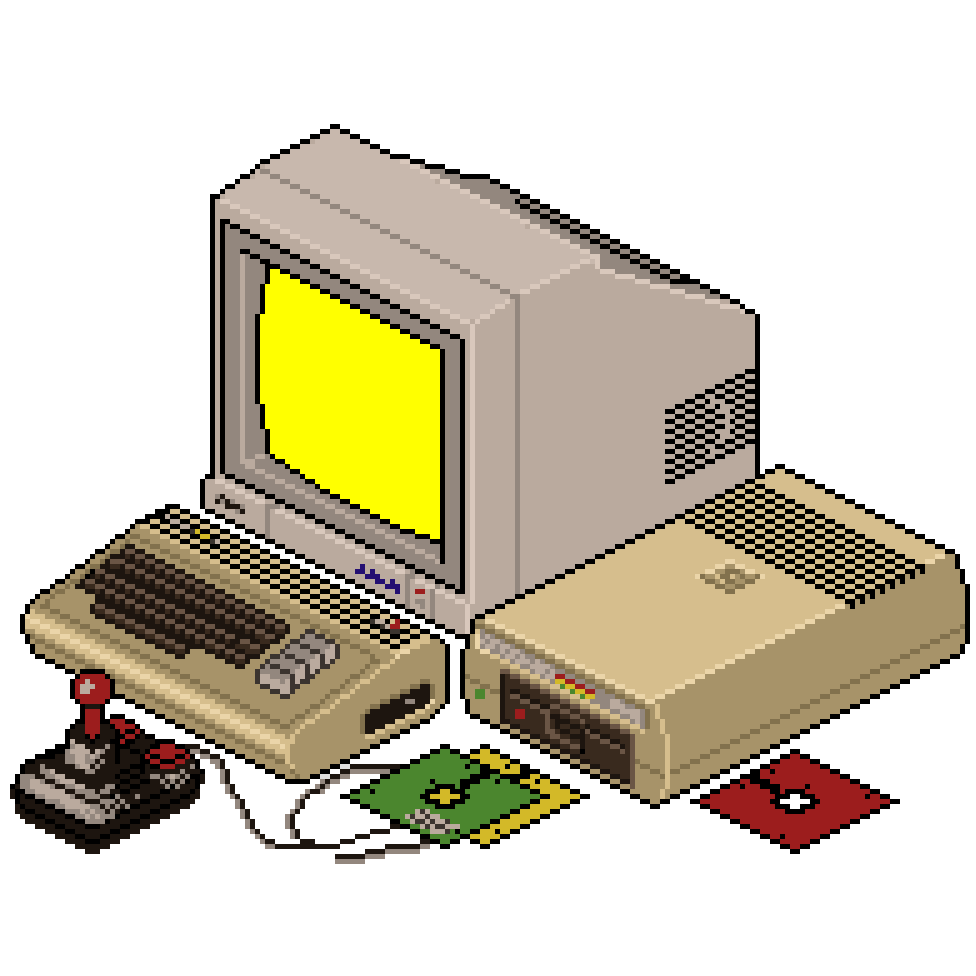

Skip to content

九份的咖啡店☕️
Welcome
Initializing search
github.io
Blogs
Tutorials
Pico-8
Reading
九份的咖啡店☕️
github.io
Blogs
Blogs
Back To Basics
Back To Basics
How C++ Resolves A Function Call
Two's Complement
Lvalues and Rvalues
Chromium
Chromium
Chromium 中的 CHECK 宏
Chromium's MessagePump
Sequence Manager
Chromium's Task Posting
Network
Network
Ip datagram
TCP
Others
Others
Clang-Tidy
Clang-Tidy
ClangTidy代码静态检测
Nesessary Checks
Fix ArkOS Not Booted (Black Screen) On RGB30
Tutorials
Tutorials
Clang Tidy Tutorial
Chromium Compile Guide
Pico-8
Pico-8
What's Out
Reading
Reading
Welcome
¶
『 May I enjoy my life and practice my art, respected by all men and in all times 』
Back to top